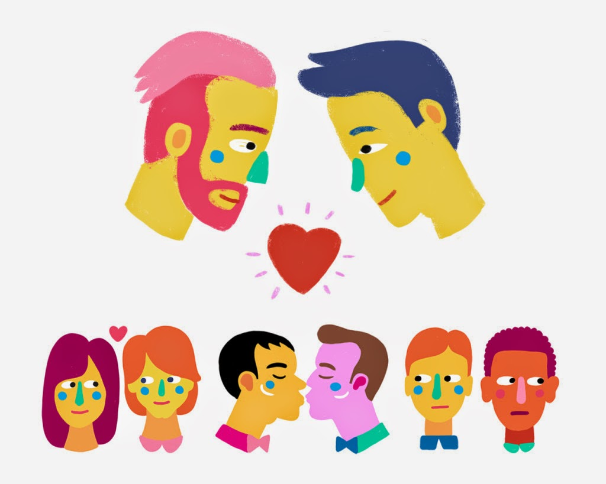
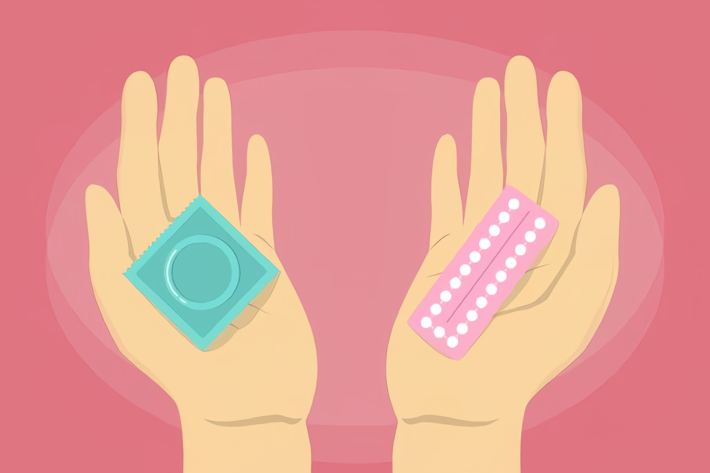
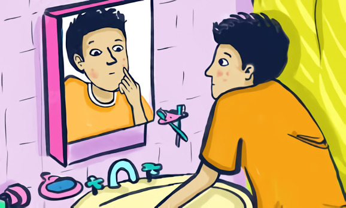

El objetivo de la ESI
Incorporar la educación sexual integral dentro de las propuestas educativas orientadas a la formación armónica, equilibrada y permanente de las personas.
Asegurar la transmisión de conocimientos pertinentes, precisos, confiables y actualizados sobre los distintos aspectos involucrados en la educación sexual integral.
Promover actitudes responsables ante la sexualidad.
Prevenir los problemas relacionados con la salud en general y la salud sexual y reproductiva en particular.
Procurar igualdad de trato y oportunidades para todas las identidades de género y orientaciones sexuales de las personas.
¿Qué es la sexualidad?
La sexualidad es un aspecto fundamental de nuestra vida y se expresa en todo lo que somos, sentimos, pensamos y hacemos. No se reduce solamente a la “mirada biológica”, es decir, a los sistemas reproductores, las relaciones sexuales y a tener hijos, como tradicionalmente se suele pensar. La sexualidad también incluye sentimientos, conocimientos, valores, creencias, actitudes, formas de relacionarse y de actuar con los otros, de tomar decisiones, entre otros aspectos. Abarca cuestiones psicológicas, afectivas, sociales, biológicas y éticas. Cada persona tiene el derecho a vivir la sexualidad de acuerdo con sus sentimientos y convicciones en el marco de un conjunto de leyes.
Sé quien eres y di lo que sientes, porque a aquellos a quienes les molesta no importan, y a quienes les importas no les molesta
¿Qué son los anticonceptivos?
Los métodos anticonceptivos son todos aquellos capaces de evitar o reducir las posibilidades de un embarazo y prevenir infecciones de transmision sexual. Te aconsejamos utilizarlos desde la primera relación sexual y durante toda tu vida sexual.
Hay metodos anticonceptivos para hombre y para mujeres. Los más comunes son el condón y las pastillas anticonceptivas pero existen variedad de metodos que te ayudaran a protegerte aun más.
 Cuidarnos para cuidar a los demás es lo correcto.¿Qué es la pubertad?
La pubertas es una etapa en tu vida donde tu cuerpo pasa de ser niñx a ser adultx. Tu cuerpo pasa por muchos cambios que suceden lentamente durante unperiodo de tiempo. La pubertad es una parte normal y sana del crecimiento.
Durante esta etapa, tu cuerpo atraviesa por muchso cambios y tus emociones pueden ser y sentirse más intensas.
La pubertas no ocurre de un momento a otro, es un proceso que tiene etapas y sucede durante varios años. Puede que tengas algunas señales de la pubertad a una edad tempran, mientras que otros cambios ocurren años despues. Cada cuerpo es diferente, asi que la pubertad también es diferente para cada persona. A su ritmo.
